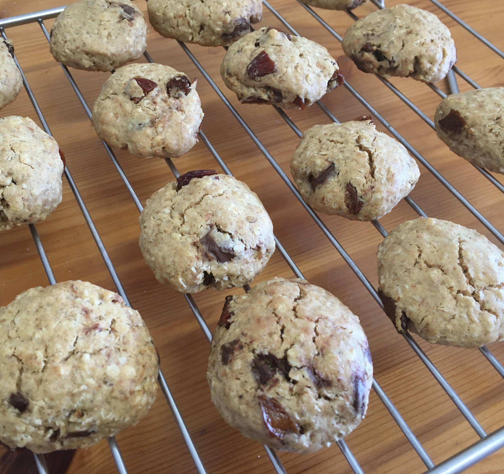

Cookie integral

Ingredientes
- 1 ovo
- 3/4 xícara (chá) de manteiga amolecida (165 g)
- 1/2 xícara (chá) de açúcar demerara (110 g)
- 1 colher (sobremesa) de essência de baunilha (10 ml)
- 2/3 xícara (chá) de farinha de trigo (100 g)
- 1 xícara (chá) de farinha de trigo intregral (105 g)
- 1 xícara (chá) de aveia em flocos finos (115 g)
- 1 colher (chá) de fermento químico (10 g)
- 1/2 xícara (chá) de chocolate picado ou gotas de chocolate (60 g)
- 1/2 xícara (chá) de uva passa (55 g)
Modo de preparo
- Misturar o ovo, a manteiga e o açúcar. Adicionar a essência de baunilha e misturar.
- Acrescentar as farinhas, a aveia e o fermento e misturar até formar uma massa homogênea.
- Adicionar o chocolate picado e a uva passa e misturar para incorporar.
- Cobrir com plástico filme ou colocar dentro de um saquinho plástico e levar para gelar por 30 minutos.
- Fazer bolinhas com a massa e dar uma leve achatadinha. Dispor em uma assadeira da lateral baixa (ou virar uma assadeira comum do outro lado e usar o fundo), forrada com papel manteiga ou tapete de silicone.
- Assar a 180º C por aproximadamente 20 minutos, até que a poarte de baixo dos cookies esteja levemente dourada. Os cookies saem do forno ainda moles e só endurecem após esfriarem.
- Após esfriar, guardar em pote bem fechado para conservar a textura.
Obseração
- Pode-se substituir a essência de baunilha por outra essência, ou canela, ou raspas de limão.
- Pode-se substituir o chocolate e a uva passa por nozes, amêndoas, tâmaras, damasco...
- Para fazer cookie de chocolate, trocar 1 colher (sopa) de farinha de trigo por 1 colher (sopa) de cacau em pó.
- A massa pode ser congelada crua, já moldada emn formato de cookie. Antes de assar, deixar em temperatura ambiente por 10 minutos.
- Receita do curso "Biscoitos e bolachas" da Eduk.